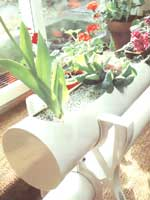

Editor's Note: Hydroponics is the art of cultivating plants in a nutrient-water solution, while the plants' roots are supported by a substance other than soil. Although we have covered the basics (see Mother's Mini-Manual: Hydroponics and Hydroponic Greenhouse Gardening), readers continually ask for updated information. The article below focuses specifically on what to feed your plants (hydroponic fertilizer) and how to avoid nutrient deficiencies. Whether you are growing hydroponic plants or just thinking about growing them, it is essential to become familiar with nutrients and how they affect growth.
Nature does a lot of the work in soil gardening. Almost all types of soil have some nutrients, but when you are growing your plants hydroponically, you are taking the controls from Mother Nature. In many instances, this allows you the opportunity to improve upon the quality of nutrients supplied.
The most common type of homemade nutrient is one made from fertilizer salts. These are available in bulk from agricultural agencies, plant-food suppliers, some nurseries and gardening stores, and chemical suppliers. The only problem with this approach is that you usually have to buy some of these salts in 25 to 50 pound bags, and unless you are growing in extensive hydroponics gardens, such quantities make the whole thing rather cumbersome and expensive. Even so, the following information is for the ambitious as well as for the person who simply wants to be informed.
Some salts are best to work with, even though there are other similar salts available. The reason is that they have superior properties, such as better solubility, cost, storage life, and stability. Potassium chloride, for example, can be used rather than potassium sulphate; however, if applied for more than a few days, the chlorine in the mix may prove harmful to your plants. This is especially true since there is likely to be chlorine in your water in the first place. Magnesium nitrate can be substituted for magnesium sulphate, but it hardly seems worthwhile to use a more expensive material for the cheap and readily available magnesium sulphate (epsom salts). Ferric citrate has to be dissolved in hot water, as opposed to cold for ferrous sulphate.
In addition to the three key elements of nitrogen (N), phosphorus (P), and potassium (K), that are essential to all plant growth (See The Dirt on Dirt for more information), there should be at least 10 trace elements present in your nutrients. These are: sulphur, iron, manganese, zinc, copper, boron, magnesium, calcium, chlorine, and molybdenum. All have specific functions.
•Nitrogen is necessary for the production of leaves and stem growth; it is also an essential ingredient in building plant cells.
•Phosphorus is required in the development of flowers and fruits, and aids in the growth of healthy roots.
•Potassium is used by plant cells during the assimilation of the energy produced by photosynthesis.
•Sulphur assists in the production of plant energy and heightens the effectiveness of phosphorus.
•Iron is vital in the production of chlorophyll.
•Manganese aids in absorption of nitrogen, an essential component in the energy transference process.
•Zinc is an essential component in the energy transference process.
•Copper is needed in the production of chlorophyll.
•Boron is required in minute amounts, but it is not yet known how plants use it.
•Magnesium is involved in the process of distributing phosphorus throughout plants.
•Calcium encourages root growth and helps plants absorb potassium.
•Chlorine is required for photosynthesis.
•Molybdenum assists in several chemical reactions.
There are hundreds of different nutrient formulas, but as long as the elements are present in balanced amounts, you have little to worry about. Trying to choose the best formula is a meaningless task, since many of the experts disagree. In the final analysis, your decision will probably be based on cost, availability, and your own preferences. However, plants do require different nutrients on different days, at different times of the day, and under different conditions. Unless you did an exhaustive test every day, it would be impossible to determine just what the plant requires at any one time. This is why it is essential to provide the plant with a balanced nutrient solution all the time, and leave it up to the plant to use what it requires.
As it is used here, the term "balanced" simply means that the nutrient contains the proper ratio of elements to satisfy the maximum requirements of the plant. The ratio is determined by calculating the parts per million concentrations of each element. Scientifically, this description may be somewhat oversimplistic, but I honestly believe in simplifying if it allows readers to have a better understanding of the process.
The plant absorbs what it needs through the small hairs on the ends of its roots. This selectivity makes it impossible to overfeed your plants in hydroponics. Don't forget, though, that if you mix too high a concentration of nutrient in the water you are using, the plant will be unable to absorb sufficient water. Salts need to dilute themselves, and if the concentration is too high, the plant will start giving off water instead of ingesting it. As a result, the plant dehydrates itself. Here is a workable nutrient recipe, based on 120 gallons.
Hydroponic Nutrient Formula
•10 ounces sodium nitrate
•10 ounces calcium nitrate
•10 ounces potassium sulphate
•15 ounces superphosphate
•5 ounces magnesium sulphate
In a separate container, combine the trace elements below and mix well; then use a mortar and pestle to grind them to a very fine powder:
•1 ounce iron sulphate
•1 teaspoon manganese sulphate
•1 teaspoon boric acid powder
•1/2 teaspoon zinc sulphate
•1/2 teaspoon copper sulphate
Once mixed, add this powder to the formula and combine. Use 1/2 teaspoon per 100 gallons of water, or dissolve teaspoon in one quart of water and use one liquid ounce to 3 gallons of nutrient solution. Leftover mix should be thrown away since it is no good after the first day.
There will be plenty of times when adjustments are necessary. Formula adjustments are probably the trickiest part of hydroponics, and caution should be used at all times or you could destroy your entire crop in a matter of days.
If you are using a well-balanced commercial nutrient and a correction is necessary because of a deficiency that you can't identify, a foliar spray may be the answer. You can easily make the spray from a highly diluted mix of nutrient and water. The easiest method would be to make up one quart of nutrient solution at regular strength and then dilute it with water to a 1:7 or even a 1:10 ratio.
Using a mister, spray the diluted solution on the leaves of the affected plants once a day for several days in a row. The leaves will absorb it quickly, so that any spreading of the symptoms will be reduced greatly in a short period of time. A foliar spray will probably solve many of your trace-element-deficiency problems.
A large-scale commercial grower will analyze the leaf tissue of his or her plants every few days and make adjustments as necessary. Because this requires a great deal of knowledge, time, and money for equipment and supplies, it is impractical for the modest home grower. In fact, it needn't be all that important in a home system where you are experimenting with hydroponics, raising relatively small crops, and changing your nutrient solution every three to four weeks. If you spend 10 to 15 minutes a day with your system, you will find that in a few months you will be able to read the signals given by your plants and be ready to make necessary changes to the nutrient. Like anything else that's worthwhile, tuning in to your plants takes some time, but the rewards are great.
Ordinarily, your home water supply will be quite satisfactory for hydroponics, but a few cautions should be given. Water from a water softener should not be used, because it will be far too alkaline. On the other hand, rain, or distilled water would be fine, as long as a reliable and inexpensive supply can be maintained. Tap water is average and will generally contain small amounts of trace elements that the plant can use if it requires them. Water that is too pure may have to be supplemented with slight increases of some trace elements, especially calcium and magnesium. If the water is very hard, you will need less calcium and magnesium but probably more iron, because iron becomes less available to the plant as the hardness of the water increases. For these reasons, it is a good idea to have an analysis done on your water supply at your local utility. If you obtain your water from a well or source other than a Public Works Department, you can contact your nearest Agricultural Department for an address to send in a water sample. Any analysis should include the content of calcium, magnesium, iron sulphate, chloride, and carbonate. In any case, it is probably worthwhile for you to know what you and your family are drinking and using in your home.
One of the main problems in attempting to determine the cause of a specific nutrient deficiency symptom is that almost everything sounds the same. In fact, this is not so; there are small differences in each problem. Like a doctor, you must attempt to isolate the symptoms and study the case history. Even if you are only able to reduce the possible causes to two or three at first, you can then isolate the symptoms, weigh the factors leading up to the problem, further reduce the possibilities to one or two at most, and take remedial action. (See "Common Nutrient Deficiency Symptoms" below in order to determine what the problem is.)
It is not necessarily true that you will encounter any or all of these imbalance problems. Because of your particular situation or environment, however, you may find that specific problems will arise from time to time. It is worth repeating that the watchword of hydroponics is experimentation, as much in problem solving as in developing a system that suits your particular needs.
Below are the trace elements found in nutrients, followed by the symptoms that occur when your plant is lacking them.
Nitrogen: Look for small, stunted plants with large root systems; leaves smaller and lighter in color than normal; and slow growth. Paleness starts at the tips of the lower leaves. If the deficiency continues, the foliage will continue to develop, but stems will be spindly, sappy, and soft, flowering will be delayed, small fruit will grow, and the plant becomes susceptible to disease.
Phosphorus: Stunted plants with dark, dull and sometimes discolored leaves, unusually hard stems, poor root system, and very little branching. Deficiency attacks lower, more mature leaves first. Occurs especially when nitrogen level is low.
Potassium: In early stages, yellowing and curling of older leaves. Newer leaves will begin to droop. Older leaves then become blotchy and scorched. Flowers are lackluster, and stems are soft. The plant will be more susceptible to diseases such as mildew and rust.
Calcium: Underdeveloped roots are the first to be affected. Younger leaves will be immobile and their edges will curl. Plants will be stunted and have dark, crinkled leaves.
Magnesium: Symptoms do not appear until deficiency is well established. The plant will be stunted. Leaf veins will stay green while the remainder of the leaf turns yellow. Brown spots will appear and then the plant will dry out. Flowers will be slow to develop, if at all. Flowers that do grow will be lackluster.
Iron: Tips of new leaves will become either pale or yellow, and this will spread inward. The leaf will likely turn blotchy from a lack of green pigment, eventually turning brown and drying out.
Manganese: Poor blooming, weak growth. Leaves may turn yellow or blotchy.
Boron: Brittle stems, and immobile new leaves with brown tips.
Zinc: Growth will be stunted.
Carbon dioxide is absolutely essential for plant growth. This gas is required for photosynthesis-turning light into energy. The optimum level of .15% C02 in the air is required for most plants. The minimum requirement is .03%, which can be used up very quickly in an enclosed indoor area. Studies show that the optimum level can provide up to 25% of additional growth to your plants.
You can add more carbon dioxide to the air by renting a tank of C02 from softdrink manufacturers, or by purchasing a C02 generator, which burns propane to create the gas. (The generator is actually the best choice for large grow rooms or greenhouses.) If you choose to rent a tank, you should use a timer and flow meter to ensure that the expensive gas is not wastrel.
•Store fertilizer salts, trace elements, and nutrients in airtight containers, away from moisture.
•When making nutrients, use a large, clean bowl for mixing. Crush crystals with a mortar and pestle (the chemist's type is best).
•Grind trace elements separately and add these last, stirring everything together very carefully.
•Make sure .ill powders are completely dissolved in water before application to your hydroponic system.
•Excerpted from the book Hydroponics for the Home Gardener, by Stewart Kenyon (Publishers Group West).
A toxic (poisonous) situation is created when one or more elements are supplied in excessive amounts. This type of situation is unlikely to occur if the reader follows specific formulas. Still, better to be prepared and safe than sorry.
•Ammonium phosphate: Nitrogen and Phosphorus
•Ammonium sulphate: Nitrogen and Sulphur
•Calcium Nitrate: Nitrogen and Calcium
•Potassium nitrate*: Nitrogen and Potassium
•Sodium nitrate: Nitrogen
•Potassium sulphate*: Potassium and Sulphur
•Superphosphate*: Phosphorus and Calcium
•Calcium sulphate*: Calcium and Sulphur
•Magnesium sulphate (epsom salts): Magnesium and Sulphur
•Ferrous sulphate*: Iron
•Manganese chloride: Manganese
•Zinc sulphate: Zinc
•Copper sulphate: Copper
•Boric acid powder*: Boron
* Best fertilizer salts to work with.
|
 Cultivating hydroponic plants in a homemade solution of fertilizer salts and water ensures that your plants will have a proper supply of nutrients. |
In hydroponics, plants grow in a nutrient-water solution. |
|